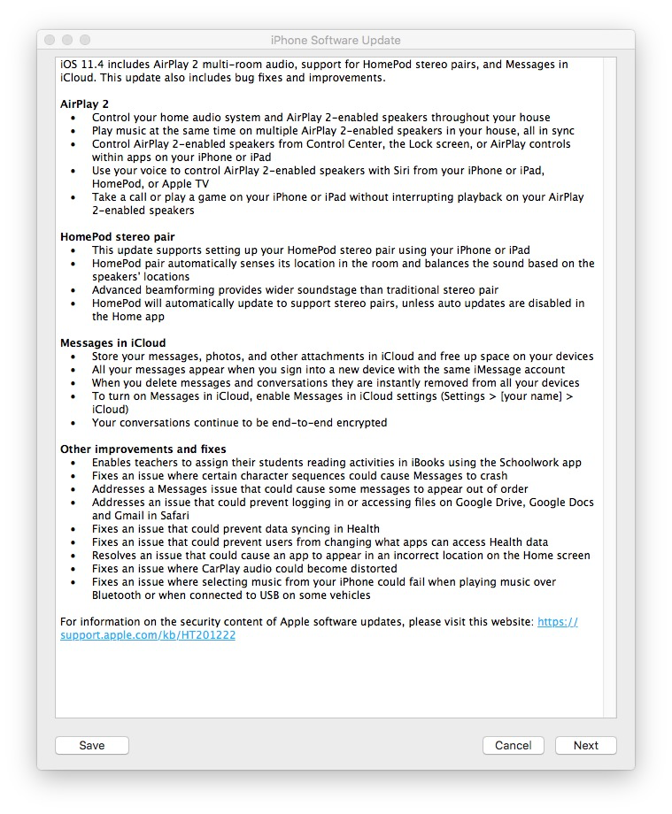
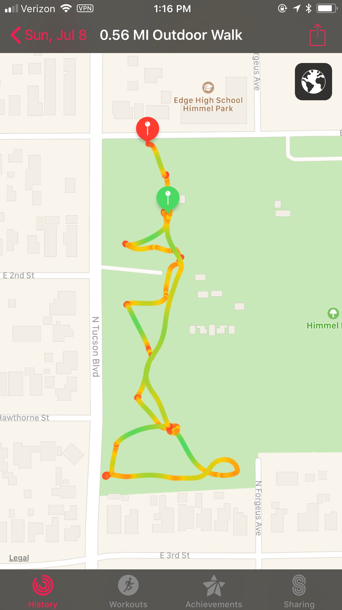

July 2018
iOS & Apple news
Apple announced that Apple News has launched 2018 Midterm Elections section. Apple writes: `An Easy Way to Follow the Elections, With Reporting From Trusted Sources Curated by Apple News Editors’. Also: `providing a new resource for timely, trustworthy midterm election information and helping news seekers access the most important reporting and analysis from a diverse set of publishers.’ This is a valuable resource for readers. Apple clearly also draws a contrast vs. other news aggregating algorithms that fall prey to fake news (
Apple released iOS 11.4.1:

Macworld gives an overview of iOS 11.4.1 and watchOS4.3.2.
Apple released iTunes 12.8 updates with support for AirPlay 2 and more.
iOS 1.4.1 includes USB Restricted Mode. A nice security feature. However, researchers found a loophole that Apple must close. Undoubtedly, it's coming.
Apple delivered a new Health Records API to developers. This is for `Apps Empowering Consumers to Manage Medications, Diseases, Nutrition and More Coming This Fall.’ Recall that back in January 2018, Apple announced Health Records feature is coming to iOS.
Many iPUG users love 1Password. Apple agrees: the company will deploy it to all employees, while acquisition talks are underway, reports BGR. However, acquisition rumors are denied, reports AppleInsider.
Take a look at a preview of iOS 12:
Former Apple employee was charged with stealing self-driving car trade secrets, reports Reuters.
More on the theft, by John Gruber.
Apple is rebuilding Apple Maps from scratch, reports TechCrunch.
iOS apps & widgets
Apple design Awards were given to iOS developers last month.
Here they are: see more about these winning apps.
Alto’s Adventure is on sale today.
Sometimes, a high-tech app like Agenda wins an award. Sometimes, a notebook with a ToDo list captures what you want to do with your life. Here is an example, from 1943, by Woodie Guthrie.
Chatology is a great app for your Mac that helps you find info from past chats much easier than you would with the native Messages app. Olga recommends it.
Here is the ultimate guide to the Maps app.
Instant Pots have become very popular. Here is an overview of recipe apps for cooking with an Instant Pot.
Apollo app uses iPhone's dual cameras to deliver an immersive illumination, reports BGR. They write: `The Apollo app ‘hacks’ Apple’s dual camera system and lets you do amazing things to a Portrait Mode photo after you’ve captured it. You can change the direction of light sources, add and remove light sources, adjust brightness and even color, and plenty more. We’ve been using it since it was first released last week, and we’re blown away.’ Take a look at the demos.
tips & tricks
Recall that Messages is encrypted end-to-end when the chat is between Apple users. (Blue text.) It is not encrypted when the app is used to text non-Apple users (green text.)
This means that between Apple users, the benefit of encryption makes Messages safer and more private that email. If you need to send someone sensitive info (an account number or a password, if you must) don't use email for sensitive info. But you can use Messages, thanks to encryption, as long as it goes to another Apple user.
What if someone sent you important / sensitive info several days ago and you cannot find it easily? Here is a way:
How to Search Message History on iPhone.
Another way to do it, is to use Chatology on your Mac. Olga recommends it.
If you forgot your Apple ID, you can reset the password. If you have problems with your Apple ID Reach out to Apple here.
If you have an iPhone, chances are you have many photos. Maybe too many. How do you find a photo from several months ago? Olga recommends searching by key word (such as dog). Another good way to search is by month. For example, type November, and you will find all photos taken in November of any year. This is a surprisingly useful feature.
gadgets & accessories
It’s been a year and a half, and Apple's AirPods are still the best wireless headphones around, reports AppleInsider.
Apple’s HomePod occupies 4 percent of smart speaker market as sector growth soars, reports AppleInsider.
The best portable Apple Watch chargers.
This iPhone X lens kit gets you closer to a `real’ camera, writes Gizmodo.
watch
How to map a park with a dog and an Apple Watch on a hot summer day in Tucson:
Start on a day that is about 105 F. Beware the dog wants to go to the park but even the green grass gets hot in the sunny parts.

The park is empty when it's 105F.

But the shade under the trees beckons...

Here is the path by Apple Watch. Green parts mean fast speed which mean hot grass, which means there is no tree. Red portions are slow movement, so they are savored. Red spots are the trees! Park can be mapped. :-)

Come home hot and happy and lay on the tiles.
privacy & security
Facebook patent shows how it can hide secret inaudible messages in TV ads to trigger your phone to record audio.
Here are 5 way that Facebook violates consumer expectations to maximize its profits, writes Jason Kint.
Researchers have found a way to send hidden commands to Siri, Alexa, and Google Assistant, reports the NY Times.
How SMart TVs in Millions of US Homes Track More Than What's On Tonight, reports the NY Times.